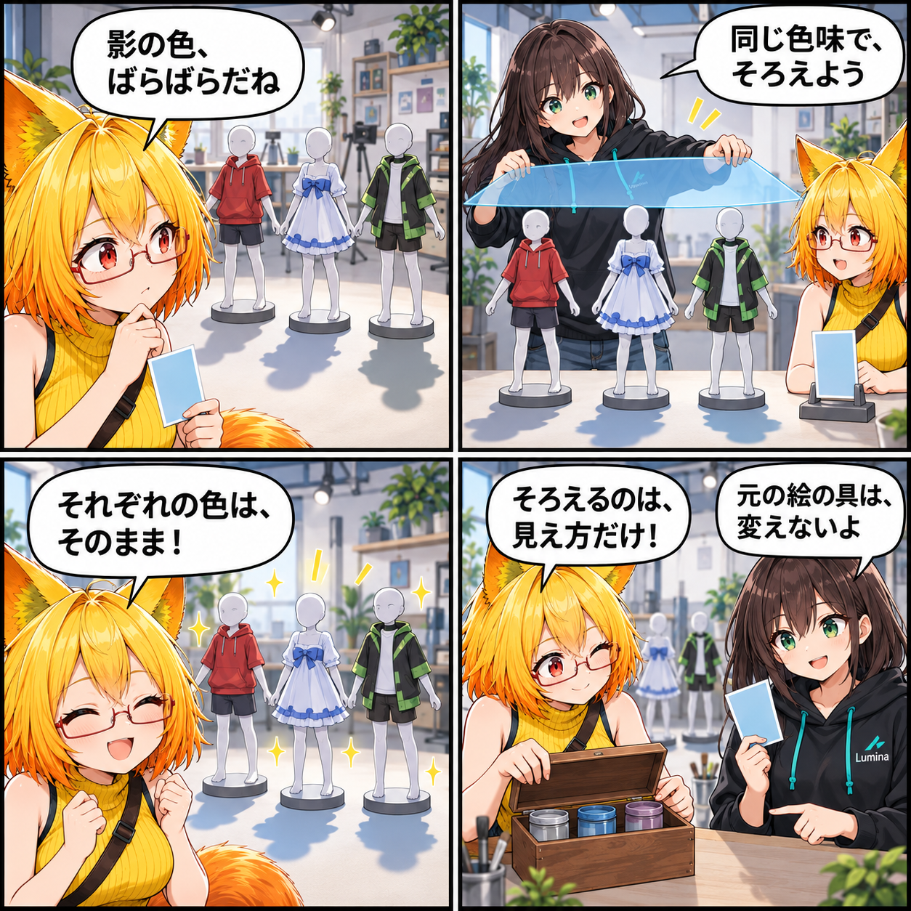

2026.09.25 / Development Log
影の色を、みんなでそろえる日
アバターの描画モードが違うと、影の色も素材ごとにまちまちになりがちです。今回はCommon Lit・Common Toon・PotaToonで使う影色を、共通設定からそろえられるようにしました。
記事種別はdevelopment。集計期間は2026-09-24 03:00:00 JST〜2026-09-25 02:59:59 JST。参照ブランチはmain、終了時点のHEADは04026042a41b26b8305c5ccf8e356a58ca03c278（Add unified avatar shadow tint controls）。対象は14コミットです。未コミット差分は実績へ含めていません。

同じ色味で、影の印象をそろえる
環境設定に「影色を統一」のオン・オフと、影色を選ぶ操作を追加しました。設定は保存され、変更すると現在の描画モードへ反映されます。
統一を有効にすると、Common Lit・Common Toon・PotaToonはそれぞれの素材のベースカラーに同じ影色を掛け合わせます。素材本来の色を残しながら、アバター全体の影の印象を合わせやすくする仕組みです。
オリジナルの陰影はそのままに
対象はCommon Lit・Common Toon・PotaToonです。オリジナル描画モードでは、アバターが元から持つ陰影を維持します。元のMaterialそのものを書き換えない方針も守っています。
ほかにも進んだこと
この期間には、近距離向けシャドウ設定の既定化、UI一覧とVR表示の定常負荷軽減、アバターの選択判定改善、ライブラリカードの表示改善、読み込み中の機能別Ready待ち共通化もコミットされました。
この日記で記しているのは集計期間内にコミットされたコードの内容です。日記制作時点でUnity実行、VR実機、性能計測、リリース確認は行っていません。
4コマの裏話
色見本、透明フィルター、模型の影という物理的な比喩で、素材ごとの色を保ちながら共通の影色を掛け合わせる仕組みを表現しました。実際のアプリ画面や実行結果ではありません。
まとめ
Common Lit・Common Toon・PotaToonの影色を共通設定から統一できるようにしました。描画モードをまたいでも、アバター全体の見え方を整えやすくなります。
本日のひとこと
そろえるのは、見え方だけ！